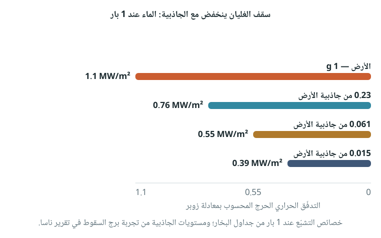

التدفّق الحراري الحرج: السقف الذي ينقلب عنده الغليان إلى جفاف
Critical heat flux (boiling crisis)
أعلى تدفّق حراري يستطيع سطح مغمور في ماء مشبّع عند 1 بار أن ينقله بالغليان النووي هو نحو 1.1 ميجاوات/م². تجاوز هذا الحدّ يغطّي السطح ببخار عازل فتقفز حرارته قبل أن ينصهر المعدن.
في مُبخِّر وحدة تقطير أو في غلاف وقود مفاعل، لا تُقاس سعة السطح بقدرته على تسخين السائل بل بأقصى تدفّق حراري يستطيع تمريره قبل أن ينفصل البخار عن السائل. عند ضغط 1 بار يبلغ هذا السقف للماء المشبّع نحو 1.1 ميجاوات/م²، وهو ما يُسمّى التدفّق الحراري الحرج (Critical Heat Flux). فوقه لا يسخن السائل أسرع فقط، بل يتبدّل نمط الانتقال كله: يتجمّع البخار في أعمدة متقاربة، ينقطع وصول السائل إلى أجزاء من السطح، فتبقى جافة وتقفز حرارتها مئات الدرجات في زمن قصير.
الظاهرة ليست حدًّا في المادة بل في الطور السائل. أنبوب فولاذي يتحمّل حرارة عالية جدًا قد ينثقب لأن سطحه الداخلي جفّ، لا لأن معدنه ضعف. ولهذا تُصمَّم الغلايات والمفاعلات على نسبة أمان إلى هذا السقف لا على هامش درجة حرارة. والرقم يعتمد على خصائص التشبّع: التوتر السطحي، وحرارة التبخير الكامنة، وكثافة البخار، والجاذبية؛ وكلها تُدخل في ارتباط هيدروديناميكي واحد يفسّر لماذا ينهار السقف في الجاذبية المنخفضة وفي السوائل ذات التوتر السطحي الصغير.
كيف تعمل الظاهرة؟
السلسلة تبدأ عند النوى النشطة على السطح: كل فقاعة تنفصل تترك خلفها مسارًا بخاريًّا، وتتقارب المسارات في أعمدة يفصل بينها طول موجي يحدده توازن بين التوتر السطحي والجاذبية. مع رفع التدفّق تزداد سرعة البخار الصاعد، ويقابلها سائل هابط في الممرات المحيطة. عند سرعة نسبية حرجة يصبح سطح الفصل بين الطورين غير مستقر (عدم استقرار هلمهولتز)، فتنكسر الأعمدة وتُحمل قطرات السائل بعيدًا عن السطح. المحصّلة أن السائل لا يعود يجد طريقًا إلى أجزاء من المعدن، فتظهر بقع جافة تكبر بسرعة. عندها ينتقل الانتقال الحراري من الغليان النووي إلى الغليان الغشائي: طبقة بخار مستمرة تفصل السطح عن السائل، ومعامل الانتقال ينهار إلى رتبة أدنى، والطاقة نفسها تُصرف في رفع حرارة المعدن بدل تبخير السائل.
العلاقة بالأرقام
ارتباط زوبر يقدّر السقف بـ q = (π/24)·ρ_v^½·h_fg·[σ·g·(ρ_l−ρ_v)]^¼، والثابت π/24 ناتج عن هندسة الأعمدة الخارجة من تحليل عدم الاستقرار لا عن مطابقة تجريبية. عند ضغط 1 بار: التوتر السطحي 58.8 mN/m، وحرارة التبخير الكامنة 2,257.9 kJ/kg، والحجم النوعي للبخار 1.694 m³/كجم أي كثافة بخار 0.590 kg/m³، وكثافة السائل 958.35 kg/m³. إدخال هذه القيم يعطي 1.1 MW/m². ولأن الجاذبية تدخل بالأس 0.25 فقط، تنخفض القيمة إلى 0.76 MW/m² عند 0.23 g، وإلى 0.55 MW/m² عند 0.061 g، وإلى 0.39 MW/m² عند 0.015 g، أي 69% و50% و35% من قيمة الأرض؛ وهذه المستويات الثلاثة هي ما قاسته تجربة برج السقوط في تقرير ناسا، ووجدت أن الانخفاض يتبع الأس 0.25 نفسه.
مفاهيم متقاربة
التدفّق الحراري الحرج ليس حدًّا لتحمّل المعدن، ولا هو نقطة بدء الغليان. الغليان يبدأ عند تدفّق أدنى بكثير، والسقف الحرج يقع بعد منطقة واسعة من الغليان النووي يكون فيها معامل الانتقال مرتفعًا ومستقرًّا. كما يُخلط أحيانًا بالتدفّق الأدنى للغليان الغشائي (نقطة ليدنفروست) وهو الطرف المقابل: قيمة دنيا لازمة للبقاء في الغليان الغشائي بعد أن يبدأ. والفرق العملي أن التدفّق الحرج يحدث والسائل ما زال باردًا نسبيًّا، فالمشكلة في تعطّل مسار السائل لا في نفاد الحرارة.
حدود التطبيق
الارتباط المشتق من عدم الاستقرار الهيدروديناميكي مكتوب لحوض ساكن مشبّع على سطح أفقي نظيف، ولا يدخل فيه التبلّل ولا الميل ولا التدفّق القسري ولا التجاوز الحراري للسائل. في الأنابيب والغلايات ذات التدفّق القسري تُستبدل به جداول بحثية وارتباطات موضعية لأن الجفاف يحدث عند جودة بخار محددة لا عند تدفّق حراري واحد. وتشتّت القياسات حول هذه الصيغة يبلغ عشرات بالمئة ويتأثر بخشونة السطح وطبقات الأكسيد والترسّبات، فالقيمة تُقرأ سقفًا هندسيًّا للتصميم لا قياسًا دقيقًا لسطح بعينه.

| الكمية | القيمة | المصدر |
|---|---|---|
| الضغط المرجعي في الحساب | 1 bar | [4] |
| التوتر السطحي للماء عند حدود التشبّع الجوي | 58.8 mN/m | [3] |
| حرارة التبخير الكامنة للماء عند 1 بار | 2,257.9 kJ/kg | [4] |
| الحجم النوعي للبخار المشبّع عند 1 بار | 1.694 m³/kg | [4] |
| كثافة بخار الماء المشبّع المحسوبة من الحجم النوعي | 0.590 kg/m³ | [4] |
| كثافة الماء السائل عند حدود التشبّع الجوي | 958.35 kg/m³ | [5] |
| التدفّق الحراري الحرج المحسوب للماء عند 1 بار و1 g | 1.1 MW/m² | [1] |
| التدفّق الحرج المحسوب عند 0.23 g | 0.76 MW/m² | [1] |
| التدفّق الحرج المحسوب عند 0.061 g | 0.55 MW/m² | [1] |
| التدفّق الحرج المحسوب عند 0.015 g | 0.39 MW/m² | [1] |
| نسبة التدفّق الحرج عند 0.23 g إلى قيمته الأرضية | 69 % | [1] |
| نسبة التدفّق الحرج عند 0.061 g إلى قيمته الأرضية | 50 % | [1] |
| نسبة التدفّق الحرج عند 0.015 g إلى قيمته الأرضية | 35 % | [1] |
المصادر
- 1 Thermohydraulic Relationships for Advanced Water Cooled Reactors (IAEA-TECDOC-1203) — International Atomic Energy Agency. www-pub.iaea.org/MTCD/Publications/PDF/te_1203_prn.pdf · اطُّلع عليه 2026-11-23
- 2 Critical heat flux for saturated pool boiling from horizontal and vertical wires in reduced gravity — NASA (Technical Note). ntrs.nasa.gov/citations/19660002852 · اطُّلع عليه 2026-11-23
- 3 Surface Tension of Water versus Temperature — The Engineering ToolBox. www.engineeringtoolbox.com/surface-tension-d_962.html · اطُّلع عليه 2026-11-23
- 4 Thermodynamic Properties of Saturated Steam — pressure in bar — The Engineering ToolBox. www.engineeringtoolbox.com/saturated-steam-properties-d_457.html · اطُّلع عليه 2026-11-23
- 5 Water — Density, Specific Weight and Thermal Expansion Coefficients — The Engineering ToolBox. www.engineeringtoolbox.com/water-density-specific-weight-d_595.html · اطُّلع عليه 2026-11-23
استشهد بهذا المصطلح
الصيغتان مبنيتان من بيانات الصفحة نفسها: العنوان والتاريخ ورابط النسخة المنشورة.
التدفّق الحراري الحرج: السقف الذي ينقلب عنده الغليان إلى جفاف — Critical heat flux (boiling crisis). (2026). ديوان المعرفة — انفراد. https://infiradev.com/diwan/terms/critical-heat-flux.html
@misc{critical-heat-flux2026,
title = {التدفّق الحراري الحرج: السقف الذي ينقلب عنده الغليان إلى جفاف},
titleaddon = {Critical heat flux (boiling crisis)},
howpublished = {{ديوان المعرفة — انفراد} — مرجع علمي عربي},
year = {2026},
url = {https://infiradev.com/diwan/terms/critical-heat-flux.html},
urldate = {2026-11-23},
note = {مراجعة علمية: عبدالله الهويدي — مراجعة في تطبيق انفراد}
}
راجعه: عبدالله الهويدي — مراجعة في تطبيق انفراد · 2026-11-23 · آخر تحديث 2026-11-23